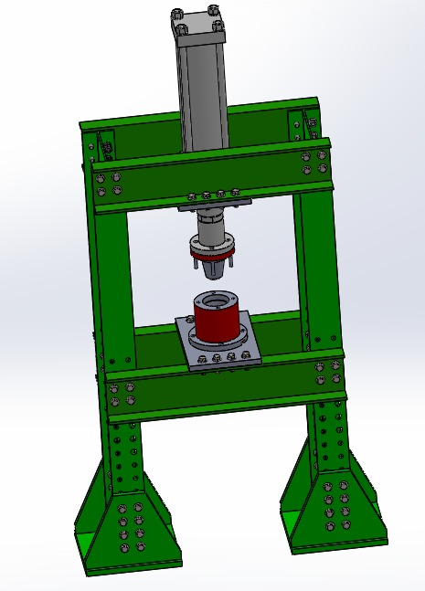

▶Thermocompression du marc de cajou
Ce système de thermocompression est dédié à la valorisation du marc de pomme de cajou en matériau biodégradable.Le défi technique ?Transformer un sous-produit agricole souvent délaissé en une alternative écologique et durable. Pour y parvenir, SADISS TECH a développé sous SolidWorks cette presse industrielle qui combine :Une structure robuste en profilés mécaniques, dimensionnée pour résister à de fortes contraintes.Un système d'actionnement puissant via un vérin pour garantir une pression de compactage optimale.Une gestion thermique précise (moule chauffante en rouge) permettant d'activer les liants naturels de la matière sans la dégrader.Ce projet allie le dimensionnement mécanique (RDM), la gestion des fluides et le contrôle thermique, tout en répondant aux enjeux cruciaux de la transition écologique.